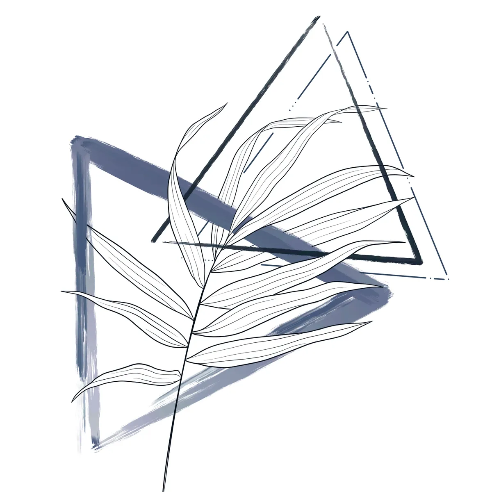

Original Paintings, Ceramics & Prints
Tattooing is only half of it. The rest of my practice lives on paper and in clay — original watercolours, charcoal and ink, hand-thrown pottery, and signed prints. Same hand, same instincts, no skin required.
Most of this work is one of one. When a painting or a ceramic piece is gone, it is gone — I do not reproduce originals as more originals. Prints are how the imagery stays available after the fact, and they are the easiest place to start collecting.
What I make
Original watercolour paintings
The core of the practice and where the tattoo style came from. Loose pigment, bleeding edges, colour that decides some of the composition on its own. Sizes range from small studies to larger framed pieces. Each one is unique and signed.
Charcoal & ink
Quieter, higher contrast, more deliberate. Where watercolour is about letting go, charcoal is about control — figure work, botanical studies, and the occasional portrait. Good for anyone who likes the drawing underneath more than the colour on top.
Ceramics & pottery
Hand-thrown, glazed in the studio, made in small batches. Mugs, vessels and one-off forms. Because glaze behaves differently in every firing, no two come out the same even from a single batch — which is either the appeal or the frustration, depending on your temperament.
Signed prints & flash
Prints of favourite pieces, signed, in deliberately small runs. Available flash sheets sit here too — designs already drawn and ready to be tattooed, for anyone who wants my work without commissioning something from scratch.

New work goes to the Collectors Club before it is posted anywhere else.
How collecting works
There is no automated shop cart here on purpose — with one-of-one work, an inventory system that thinks two people can buy the same painting causes more problems than it solves. So it is direct:
- See something you want? DM me on Instagram or email lacey@rawsunart.com.
- I confirm it is still available and send you a total including shipping.
- Want first look instead of competing for it? Join the Collectors Club — members see new pieces before they go public.
Questions I get a lot
How do I buy an original piece?
Message me on Instagram at @raw.sun.art or email lacey@rawsunart.com with the piece you want. I will confirm it is still available, send you a total including shipping, and arrange payment. Originals are one of one, so availability changes fast — the Collectors Club sees new work before it goes public.
What is the Collectors Club?
A free email list for people who collect the work rather than wear it. Members get first look at original paintings and ceramics before anything is posted publicly, early access to print releases, and studio letters about what I am making. No cost, and you can leave any time.
Do you ship outside Ohio?
Yes. Prints ship flat and well protected, and originals and ceramics are packed individually — ceramics especially, since they are one of a kind and cannot be replaced. Email me for a shipping quote to your address before you commit.
Are the prints signed and limited?
Yes. Prints are signed, and print runs are kept deliberately small rather than open-ended. They are the most affordable way into the work — the same imagery as an original, at a fraction of the price.
Can I commission an original painting?
Sometimes, depending on the subject and my tattoo schedule. Email lacey@rawsunart.com with what you have in mind, roughly what size, and your timeline. If it is not something I can take on I will say so rather than leave you waiting.
Can a painting become a tattoo?
Often, but not by tracing it. Paper and skin behave differently — a wash that works in a painting needs structure underneath it to survive as a tattoo. If a piece speaks to you, bring it to your consult as a reference and I will adapt the idea into something built to last on the body.
Get first look at new paintings, ceramics and print releases before they go public.
Join the Collectors Club See Tattoo WorkPrivate studio inside AION Tattoo · 2719 Sawbury Blvd, Dublin, OH 43235
614-858-5574 · lacey@rawsunart.com · @raw.sun.art